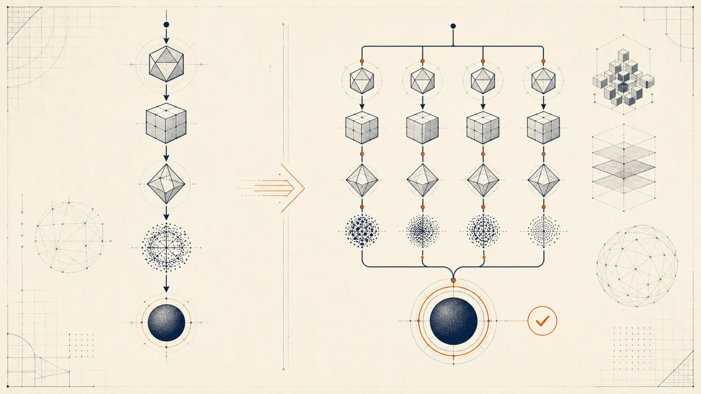

Technical Field Manual / 90-minute core
From login node to a validated Slurm job without guessing at site policy.
Tianshi Xu / Department of Mathematics
Last reviewed: July 2026
Developed and reviewed with assistance from GPT 5.6-Sol.
tianshixu.com/utilities/
hpc-workshop/
Field map / Core route
Parallel work, limits, and Amdahl's Law.
Login, compute, storage, and network.
Slurm resources, scripts, and evidence.
uv, Remote-SSH, and safe agents.
Validate and run a dependency-free Python job.
Threads, Git, data, containers, and notebooks.
Core path: 90 minutes. Optional material stays out of the critical path.
Module 01 / Core
Scale the work, not just the machine.
01.1 / Parallel work
Parallel hardware helps only when the algorithm provides work that can proceed concurrently.
More resources do not repair serial dependencies, load imbalance, or excessive communication.

01.2 / Execution models
01.3 / Amdahl's Law
If 95% of a program is parallel, 32 workers give at most about 12.5x speedup.
Even infinitely many workers cannot exceed 20x while 5% remains serial.
Optimize the dominant serial and communication costs before requesting a larger allocation.
01.4 / Scientific workloads
PDEs, particles, climate, fluids, and materials.
Genomics, imaging, inverse problems, and ensembles.
Training, inference, parameter sweeps, and uncertainty.
Compute, memory, storage, and communication must all fit the workload. The June 2026 TOP500 snapshot is linked from the field manual.
Module 02 / Core
Know where each kind of work belongs.
02.1 / System map
Edit, transfer, inspect, and submit.
Run CPU, GPU, and high-memory work.
Home, project, scratch, and archive have different policies.
02.2 / Login boundary
sbatch, squeue, sacctVS Code Server, remote extensions, and agent terminals run on the remote login host too.
02.3 / Node anatomy
Sockets, cores, hardware threads, caches, and NUMA domains.
Capacity and bandwidth are node-local constraints.
Accelerators have model-specific memory and interconnects.
Inspect the site's node definitions before translating “CPU” into a physical core or hardware thread.
02.4 / Data path
Interconnect latency and bandwidth matter for MPI, distributed training, and parallel I/O.
Local GPU links and the cluster fabric solve different communication problems.
Module 03 / Core
Describe resources, submit work, inspect evidence.
03.1 / Scheduler role
Jobs wait until compatible CPU, GPU, memory, time, and policy constraints are available.
A pending job is not necessarily broken. Inspect its reason before changing the request.
03.2 / Resource language
--ntasks usually maps to processes or ranks.
--cpus-per-task reserves schedulable CPU units for each task.
--mem is per node, not a job-wide total.
--gres=gpu:1 is the generic baseline used here.
--time is a hard wall-clock limit.
Account and partition remain cluster-specific.
03.3 / Common layouts
Many tasks, usually one or a few CPU slots each.
One task, multiple CPU slots, matching thread controls.
Several tasks, each with multiple threads.
Your application must create the matching ranks or threads. Slurm does not parallelize it automatically.
03.4 / Batch script anatomy
#!/bin/bash
#SBATCH --job-name=hello_hpc
#SBATCH --output=hello_hpc_%j.out
#SBATCH --error=hello_hpc_%j.err
#SBATCH --nodes=1
#SBATCH --ntasks=1
#SBATCH --cpus-per-task=1
#SBATCH --mem=1G
#SBATCH --time=00:05:00
set -euo pipefail
# Add account, partition, and a Python module only when required.
cd "${SLURM_SUBMIT_DIR:-$PWD}"
python3 -u hello_hpc.pyLeave account and partition unset unless the local documentation requires them.
03.5 / Essential commands
sbatchSubmit a batch script.
squeueInspect queued and running jobs.
scontrolExplain job and node state.
sacctRead state, time, memory, and exit code.
scancelStop a job intentionally.
sinfoSummarize partitions and availability.
03.6 / Failure evidence
sacct -j 12345 --format=JobID,State,Elapsed,MaxRSS,ExitCode
scontrol show job 12345
tail -n 80 hello_hpc_12345.out
tail -n 80 hello_hpc_12345.errMeasure peak use; fix the program or right-size memory.
Estimate runtime or checkpoint; do not request arbitrary days.
Read the reason: resources, dependency, policy, or reservation.
Module 04 / Core
Reproducible environments, safe remote work, bounded automation.
04.1 / Python 3.12 + uv
module spider python
module load python/<site-version>
uv init --python 3.12 myproject
cd myproject
uv add numpy scipy matplotlib
uv sync --locked
uv run --frozen python analysis.py
git add pyproject.toml uv.lock
echo ".venv/" >> .gitignoreConda or Mamba remains useful for site-provided MPI, CUDA, or compiled dependency stacks.
04.2 / Remote-SSH
Host research-cluster
HostName login.example.edu
User your_username
IdentityFile ~/.ssh/id_ed25519
ServerAliveInterval 60
# ProxyJump gateway.example.edussh research-cluster.$HOME/project-name, not all of home.04.3 / Safe agentic workflow
.out, .err, and sacctsbatch or scancelReview git diff before submitting anything the agent changed.
Module 05 / Core
Make one small claim and collect the evidence.
05.1 / Program
# Abridged: use the full reviewed file in the field exercise
import os
import platform
import socket
def slurm_value(name):
return os.environ.get(name, "not set")
work_items = 250_000
checksum = sum((i * i) % 97 for i in range(work_items))
print("=== HPC environment ===")
print(f"Hostname: {socket.gethostname()}")
print(f"Python: {platform.python_version()}")
print(f"Slurm job ID: {slurm_value('SLURM_JOB_ID')}")
print(f"Slurm node list: {slurm_value('SLURM_JOB_NODELIST')}")
print(f"CPU slots for task: {slurm_value('SLURM_CPUS_PER_TASK')}")
print(f"Deterministic checksum ({work_items:,} items): {checksum}")05.2 / Allocation
#!/bin/bash
#SBATCH --job-name=hello_hpc
#SBATCH --output=hello_hpc_%j.out
#SBATCH --error=hello_hpc_%j.err
#SBATCH --nodes=1
#SBATCH --ntasks=1
#SBATCH --cpus-per-task=1
#SBATCH --mem=1G
#SBATCH --time=00:05:00
set -euo pipefail
# Add account, partition, and a Python module only when required.
cd "${SLURM_SUBMIT_DIR:-$PWD}"
python3 -u hello_hpc.pyThis dependency-free smoke test uses the site's python3; project environments use Python 3.12 + uv.
05.3 / Validation sequence
bash -n hello_hpc.slurm
sbatch --test-only hello_hpc.slurm # when supported
sbatch hello_hpc.slurm
squeue -u "$USER"
sacct -j 12345 --format=JobID,State,Elapsed,MaxRSS,ExitCode
cat hello_hpc_12345.out
cat hello_hpc_12345.errCore route / Complete
The program ran on a compute node.
Slurm metadata matches the request.
State is COMPLETED, exit code is 0:0, and stderr is empty.
Next: measure the real workload, request only what it can use, and keep the run reproducible.
Optional / Reference
Use these only when the project needs them.
#SBATCH --ntasks=1
#SBATCH --cpus-per-task=4
export OMP_NUM_THREADS="$SLURM_CPUS_PER_TASK"
export OPENBLAS_NUM_THREADS="$SLURM_CPUS_PER_TASK"
export MKL_NUM_THREADS="$SLURM_CPUS_PER_TASK"
export NUMEXPR_NUM_THREADS="$SLURM_CPUS_PER_TASK"
uv run --frozen python -u numpy_threads.pyBenchmark 1, 2, and 4 threads. More threads can lose to startup, memory bandwidth, or nested parallelism.
project/
├── pyproject.toml
├── uv.lock
├── src/
├── scripts/
├── tests/
└── .gitignore # .venv/, outputs/, large dataCommit scripts and lockfiles. Record the commit ID with each production run.
apptainer pull python_3.12.sif docker://python:3.12-slim
apptainer exec python_3.12.sif python --version
sbatch --job-name=analysis \
--time=00:30:00 --mem=4G --cpus-per-task=1 \
--output=analysis_%j.out --error=analysis_%j.err \
--wrap='apptainer exec myapp.sif ./run_analysis'GPU, MPI, filesystem binding, and image-cache behavior remain site-specific.
# On the allocated compute node
jupyter lab --no-browser --ip=127.0.0.1 --port=8888
# From the laptop, if direct compute-node SSH is permitted
ssh -N -J research-cluster \
-L 8888:127.0.0.1:8888 your_username@compute-nodeUse the allocated hostname. Otherwise follow the site's Open OnDemand or documented relay-tunnel pattern.
ssh -vv research-cluster in a terminal.ProxyJump.ControlMaster.